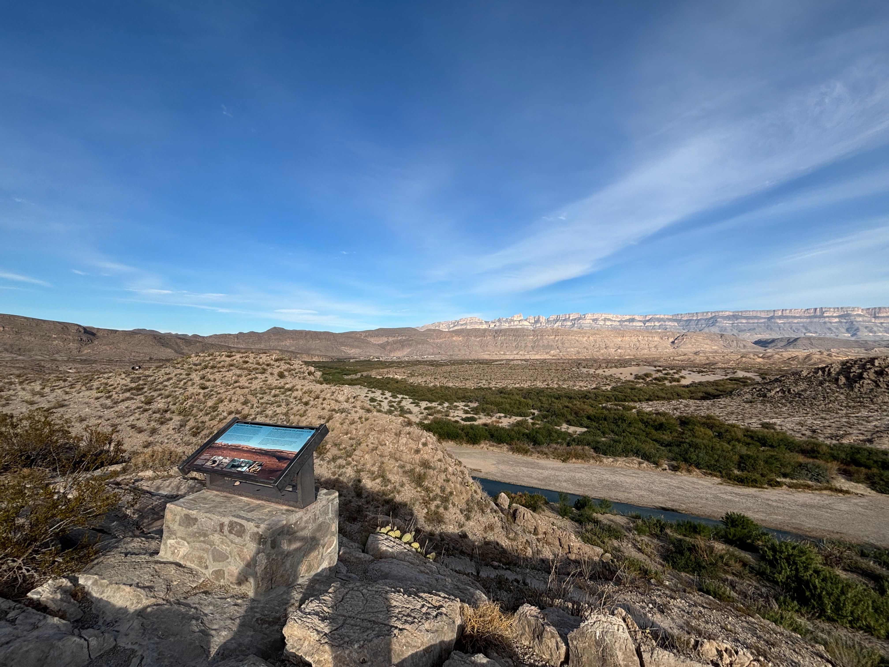
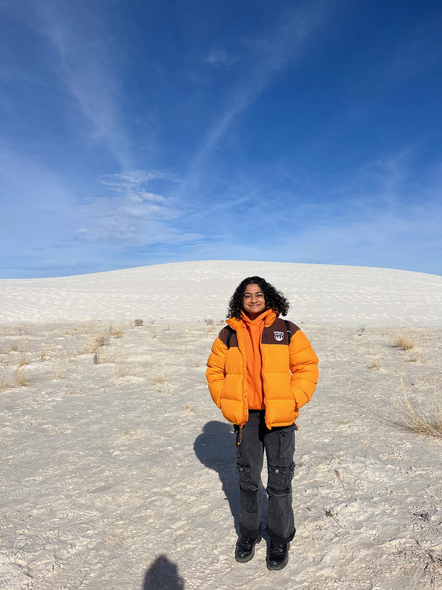

I love traveling because it allows me to immerse myself in new cultures, and meet new people. Here I am on a trip to Scotland, at the top of Arthur's Seat in March 2023!
I love traveling because it allows me to immerse myself in new cultures, and meet new people. Here I am on a trip to Scotland, at the top of Arthur's Seat in March 2023!
 I took advantage of my newfound proximity to Big Bend National Park, and went on a camping trip in Fall 2024.
My name is Sanskruti Admane (pronounced sun-screw-tea uh-duh-mah-nay)! I use she/her pronouns. I have lived in Columbus, Ohio for most of my life, but I also lived in Hyderabad, India for four years during middle school. I can speak/read/write Marathi and Hindi.
I received my undergraduate degree at The Ohio State University, with a double major in astronomy and physics, and a minor in computer science.
Currently, I am a graduate student at Rice University, in the Earth, Environmental, and Planetary Sciences department.
I study planet and asteroid belt formation.
Specifically, I look at how our rocky planets - Mercury, Venus, Earth and Mars - became their unique selves.
That involves investigating clues from meteorites, predicting which planets formed first, and recreating the planets and asteroid belt as they are today!
To do this, I use powerful computers to model the massive collisions that may have occurred to create these bodies. My goal is to help us better understand our Solar System's early days.
Interested? Read more about it here!
I am also interested in researching the evolution of astronomy through Ancient Rome. I studied Latin throughout high school and college, so being able to apply my knowledge about astrophysics to the contextual analysis of another language and culture has been an enriching experience. I also can read, (and with a refresher, speak) French. I like to learn languages to read books written in them. While it may be impossible to read all of the books in the world, I want to try to expand how much I can read.
Outside of school, I love to volunteer and participate in outreach. You can read more about it here! I also make my own coffee and love running, hiking, and playing piano!
 I also love hammocking, especially on outdoor trips. During OSU's trip to Greenbank Observatory in March 2023, I stayed in a hammock for the weekend.
I also love hammocking, especially on outdoor trips. During OSU's trip to Greenbank Observatory in March 2023, I stayed in a hammock for the weekend.
 Being in the Earth Sciences department has increased my appreciation for geological phenomena. Here I am on a trip to White Sands National Park in NM, 2024.